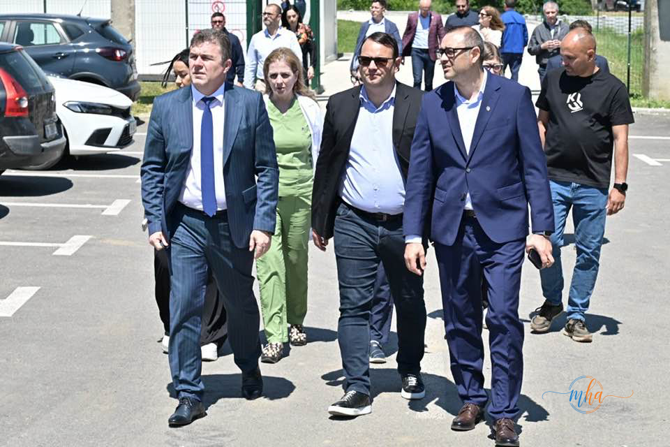
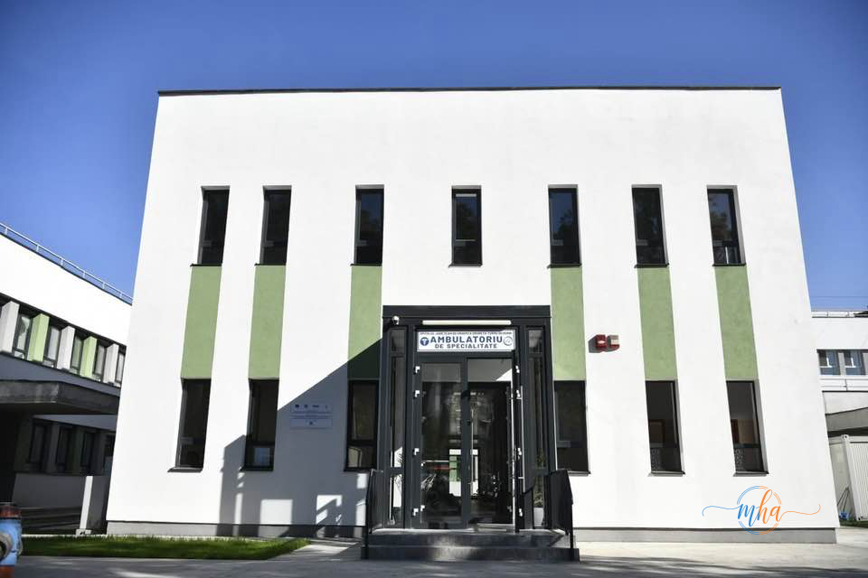
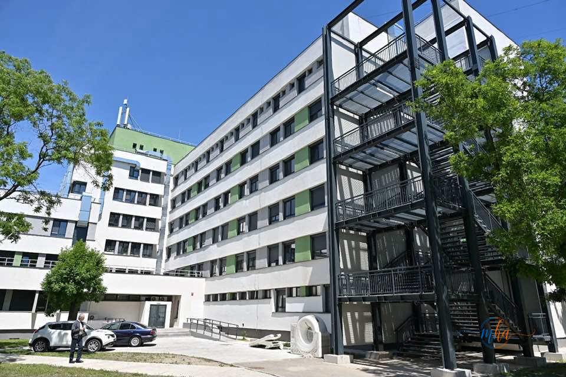
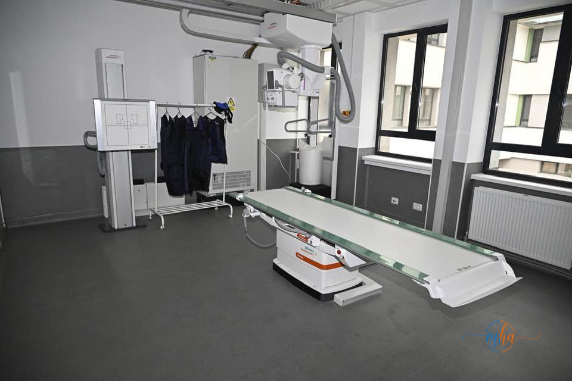

Spitalul Județean de Urgență Drobeta Turnu Severin a primit astăzi o vizită de marcă: Stelian Bărăgan, directorul general al Agenției pentru Dezvoltare Regională Sud-Vest Oltenia, a venit însoțit de echipa Autorității de Management pentru a vedea la fața locului rezultatele investițiilor realizate cu fonduri europene.
Alături de Bogdan Simcea, fost secretar de stat în cadrul Ministerului Investițiilor și Proiectelor Europene, și de reprezentanții Spitalului Județean și ai ADR Sud-Vest Oltenia, oficialii au vizitat toate investițiile realizate de Consiliul Județean Mehedinți în această unitate medicală de referință a județului.

Delegația ADR Sud-Vest Oltenia și reprezentanții CJ Mehedinți în vizită la spital. Foto: CJ Mehedinți
26 de milioane de euro investite în sănătatea mehedințenilor
Cele trei proiecte implementate însumează investiții de peste 26 de milioane de euro pentru modernizarea, extinderea și dotarea spitalului, inclusiv realizarea heliportului destinat intervențiilor medicale de urgență.
- Total investiții: peste 26 milioane de euro
- Finanțare nerambursabilă (UE): peste 16,8 milioane de euro
- Contribuție CJ Mehedinți: peste 9,1 milioane de euro
Cel mai mare proiect: 20 milioane euro pentru corpul principal al spitalului
Cel mai mare proiect, în valoare de peste 20 de milioane de euro, a vizat modernizarea, recompartimentarea și eficientizarea energetică a corpului principal al spitalului. Lucrările au inclus reabilitarea unei suprafețe de peste 17.700 mp, reorganizarea fluxurilor medicale, modernizarea completă a infrastructurii și crearea unor condiții moderne pentru actul medical.
Pacienții și personalul medical beneficiază acum de spații complet reabilitate, aparatură medicală performantă și condiții semnificativ îmbunătățite față de situația dinaintea investiției.

Corpul principal al spitalului după reabilitare — 17.700 mp modernizați. Foto: CJ Mehedinți
- Corp principal spital reabilitat — 17.700 mp modernizați
- Reorganizarea completă a fluxurilor medicale
- Modernizarea infrastructurii și eficiență energetică
- Extinderea și dotarea Ambulatoriului Integrat de Specialitate
- Extinderea Unității de Primiri Urgențe (UPU)
- Heliport complet echipat pentru intervenții rapide
- Aparatură medicală performantă în toate secțiile

Ambulatoriul Integrat de Specialitate — extins și dotat cu fonduri europene. Foto: CJ Mehedinți

Vedere de ansamblu asupra complexului spitalicesc modernizat, cu noua UPU în prim-plan. Foto: CJ Mehedinți
Heliport nou — esențial pentru urgențele grave
Una dintre cele mai importante componente ale investiției este heliportul complet echipat, construit în cadrul proiectului de extindere a UPU. Acesta este esențial pentru intervențiile rapide și transferul pacienților în situații critice — cazuri grave care necesită transport aerian de urgență spre centre medicale superioare sau preluarea rapidă a pacienților din zonele greu accesibile ale județului.
Județul Mehedinți, cu relief variat și zone montane izolate, beneficiază acum de o infrastructură medicală de urgență la standarde europene.
ADR Sud-Vest Oltenia, partener esențial în implementare
Investițiile au fost posibile cu sprijinul direct al Agenției pentru Dezvoltare Regională Sud-Vest Oltenia, care a asigurat cadrul de finanțare și a monitorizat implementarea proiectelor. Vizita directorului general Stelian Bărăgan confirmă interesul autorităților regionale pentru finalizarea și valorificarea acestor investiții majore.
Colaborarea dintre Consiliul Județean Mehedinți și ADR Sud-Vest Oltenia rămâne un model de parteneriat instituțional pentru atragerea și gestionarea fondurilor europene destinate infrastructurii medicale.